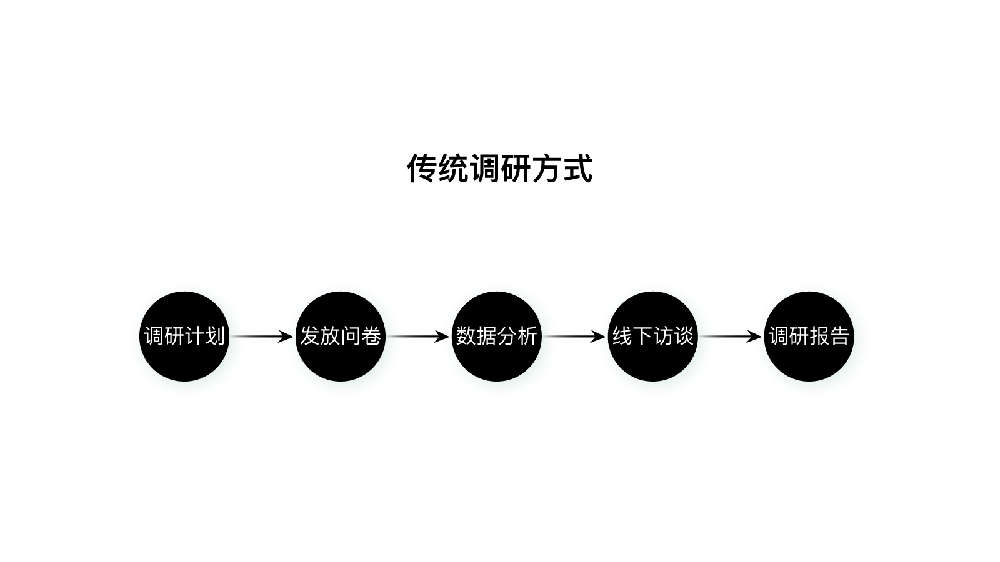
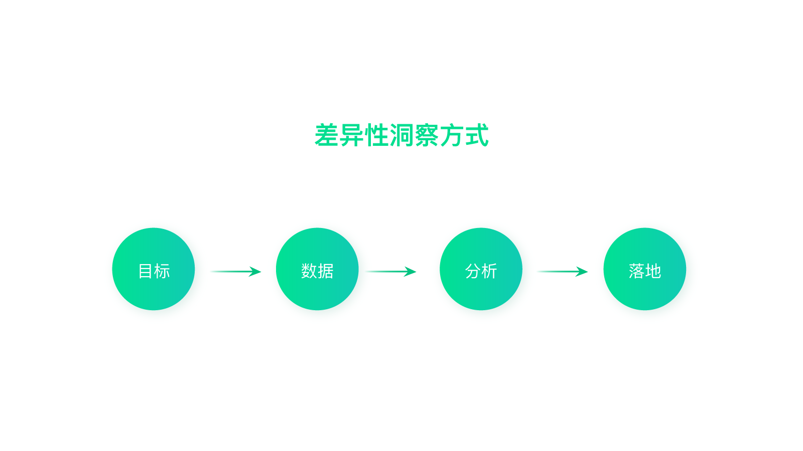
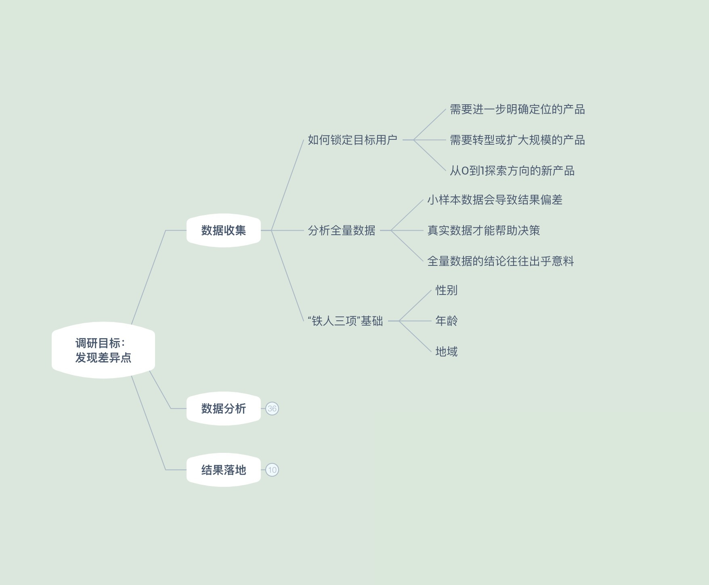
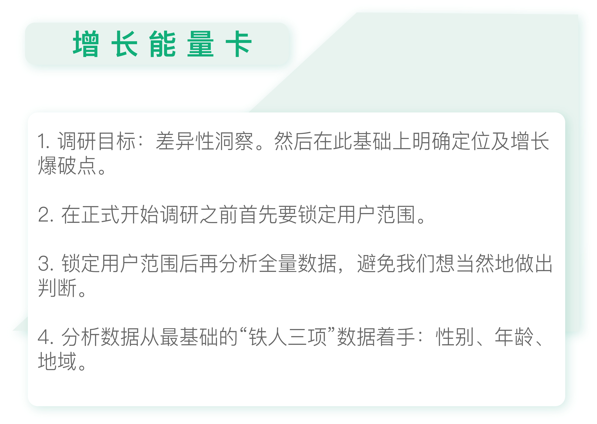

- 00 开篇词 人人都是增长官.md.html
- 01 预习 增长小白如何“弯道超车”？.md.html
- 02 预习 如何理解“增长”？.md.html
- 03 预习 不同职能如何做好增长？.md.html
- 04 预习 做增长如何处理职能间的矛盾？.md.html
- 05 正确目标找不对，天天加班也枉然.md.html
- 06 活学活用北极星指标.md.html
- 07 OKR如何助力增长？.md.html
- 08 不懂用户调研？那就对了！.md.html
- 09 调研目标：在差异性洞察中找到爆破点.md.html
- 10 数据分析：在“花式对比”中发现玄机.md.html
- 11 用户分类：围绕北极星指标细分人群.md.html
- 12 用户访谈：像侦探一样寻找破案线索（上）.md.html
- 13 用户访谈：像侦探一样寻找破案线索（下）.md.html
- 14 提炼用户差异，发现增长契机.md.html
- 15 挖掘产品优势，打破增长瓶颈.md.html
- 16 定位营销差异，抢占用户心智.md.html
- 17 一级方向：找到增长爆破点.md.html
- 18 B端产品如何调研？.md.html
- 19 全局规划增长机会.md.html
- 20 统筹全局的用户增长地图.md.html
- 21 案例解析：定义关键增长指标.md.html
- 22 正负双向洞察，找准切入点.md.html
- 23 二级机会：制定增长策略.md.html
- 24 为一家濒临破产的公司制定增长策略（上）.md.html
- 25 为一家濒临破产的公司制定增长策略（中）.md.html
- 26 为一家濒临破产的公司制定增长策略（下）.md.html
- 27 为什么指标数据怎么优化都不提升？.md.html
- 28 案例解析：打造增长闭环（上）.md.html
- 29 案例解析：打造增长闭环（下）.md.html
- 30 案例解析：唤醒沉睡用户（上）.md.html
- 31 案例解析：唤醒沉睡用户（下）.md.html
- 32 没有分解，就无缘增长.md.html
- 33 四个要点颠覆传统需求文档.md.html
- 34 三级落地：无限场景应用.md.html
- 35 手把手教你设计一次成功的实验（上）.md.html
- 36 手把手教你设计一次成功的实验（下）.md.html
- 37 积少可成多，别针换别墅.md.html
- 38 四级延续：增长组件库案例.md.html
- 39 以用户为中心增长.md.html
- 增长导航图 增长专栏的知识架构是怎样的？.md.html
- 尾声 结束意味着新的开始.md.html
- 预习答疑 你需要一张思维导图吗？.md.html
- 捐赠
09 调研目标：在差异性洞察中找到爆破点
你好，我是刘津。
从今天开始，我会正式教你如何在全新的调研方式中获取洞察。
传统的调研方式大概有以下几个步骤：制定调研计划、发放问卷、数据分析、线下访谈、写调研报告。这种方式的缺点是过于重视方法及流程，结果冗长缺乏重点，更是谈不上什么洞察。

其实用户调研并不需要那么麻烦，我们只需要先考虑调研目标，再考虑看什么数据（包括数据分析和访谈信息），如何分析数据，结果如何落地，就可以了。

锁定目标用户
在开始调研之前，我们首先要锁定用户范围。下面我给你简单地举几个例子，看看不同的产品如何锁定自己的用户范围。
需要进一步明确定位的产品
我刚去宜人贷的时候，宜人贷已经有了数千万体量的用户，在业内位居前列。
但即使是这样，公司内部也没有人能说清楚和众多竞品相比，宜人贷的核心优势到底是什么，产品定位是什么，在营销层面应该如何宣传等等。
大家都是凭感觉，看数据来判断。但即使数据好了，也并不清楚它背后的原因是什么。
这是因为在产品前期、中期，大都是快速迭代、野蛮生长，所以往往不会把太多的精力放在调研上，这是一种很常见的现象。
但是那个时候，宜人贷已经在行业占据了稳定的位置，且增长正在逐步放缓。如果继续放任这种情况，产品增长将很快陷入瓶颈，并浪费大量资源。
所以，在那个时候，宜人贷很有必要针对现有用户进行一次大规模的调研，摸清楚用户特征及产品差异化的定位，助力进一步增长。
需要转型或扩大规模的产品
除了像宜人贷这样需要进一步明确定位的产品，急需转型或者扩大规模的产品也需要做好用户范围的锁定。我想用小红书为你举例。
小红书是一款用户数上亿的分享社区App，90后和95后是其中最活跃的用户群体。
我前些天听了一场小红书的分享，得知他们在一线城市的渗透率已经很高了，如果想要更多人使用，就要下沉到二线城市。
这个时候，小红书要关注的，更多的是潜在用户。
除了需要调研已经在使用小红书的二线城市用户，看看这些用户率先使用的原因是什么。同时，还需要调研未使用过小红书的二线城市用户，看看潜在用户不使用小红书的原因以及他们的诉求。
从0到1探索方向的新产品
对于从0到1的产品来说，一开始没有成型的产品，也没有用户，那么该如何定位目标人群呢？我还是举分众传媒的例子来说明。
首先，分众明确了要寻找一个细分市场，把产品做在一个足够小的点和足够小的客户群上，并且要将它做透，做到完美。这也是“分众”名称的由来。
那么如何找到这个细分市场呢？那要看现在主流的市场是什么，再和它差异化竞争。
当时主流的广告媒体是电视，而央视是其中的巨无霸。但是分众察觉到年轻人很少看电视，而有钱人没时间看电视。既然央视已经专门针对有时间看电视的用户，那分众就去做没时间看电视的用户。
明确市场定位之后，分众又继续思考如何确定目标人群。这时候北极星指标就至关重要了：做一个广告传媒产品，最重要的是用户容易被品牌影响并促成购买。
顺着这个思路，分众首先排除了8亿农村人口，因为绝大多数做广告的产品都是针对都市人群的。
然后。分众又将剩下的5亿城市受众中20岁以下的青少年和50岁以上的中老年人排除在外，因为青少年没有消费能力，而中老年人不容易被新的品牌影响。
最后，再筛选出月收入3000元以上的人，这样符合分众北极星指标的人就只剩1.5亿人了。这1.5亿人虽然只占中国人口的10%，但却占据了城市消费的70%。
所以，分众将主要的客户群体定位为月收入3000元以上的城市人群。
讲到这里，可以简单总结一下。
如果你的产品已经有了大量的用户，但是不清楚定位，那就去调研现有用户，摸索清楚定位。
如果你的产品定位比较明确，但目前增长陷入瓶颈，面临转型或扩大规模，那么就需要重点调研潜在用户。
如果你的产品还处于0到1的阶段，那么就需要顺着北极星指标先定位目标人群，再进行调研。
后面我主要以第一种情况为例详细说明如何做调研。因为第一种情况学会了，后面的情况你也能轻松地举一反三了。
分析全量数据
无论是上述哪一种情况，我们都需要先对全量数据有大致的了解，方便我们有整体上的认识，原因主要有三个。
第一，传统用户研究比较倾向于问卷数据或访谈数据，这种小样本的数据势必会导致结果上的偏差。
第二，在现今这个时代，产品越来越多元化、用户也由过去的一二线城市不断下沉，拼多多的崛起足以证明这点。
而不同城市的人群在生活方式上的差异非常大，所以随着时代的发展，我们平时能接触到的用户，可能和我们的主流用户相差甚远。因此，一定要通过全量的真实数据帮助我们做进一步的决策。
第三，全量数据的结果往往和我们的日常认知大相径庭。
比如罗振宇在2019年跨年演讲中提到：淘宝2018年计划在春晚做广告，他们知道春晚流量很大，但是不确定有多大。毕竟身边的人都在讨论双十一，而看春晚的人却是越来越少的。
为了稳妥起见，他们决定在2017年双十一的基础上再扩容3倍，来应对春晚流量。结果呢？春晚当晚登录的实际峰值，远远超过了双十一，是双十一流量的15倍。
这个事件让我十分感慨。我们经常想当然地做出判断，却对真相一无所知。这个时候，如果能提前做一些准备，多做一些调研，会帮助我们有更清醒的认识。
这也解释了为什么我们从传统调研报告中很难得到深刻的洞见。样本量的限制、受访人群的限制等，都阻碍了我们获得事实的真相，使我们难以发现和原有不同的认知。最终得到的似乎都是一些本来就知道的讯息。
铁人三项基础
全量数据分析很重要，但听起来似乎操作会非常复杂。随着技术的发展，你现在能够收集到的数据越来越多，很容易就看花了眼，不知道该从何入手。
这里给你提供一个“捷径”，你可以先从最基本的三大数据项着手，即“性别”“年龄”“地域”，我称之为“铁人三项”数据。
“铁人三项”数据是最基础的数据，所有产品通用，而且非常容易挖掘出差异点。
毕竟男人和女人之间的差别、不同年龄层产生的代沟，不同地区的人迥异的生活方式都足够写出好几本笑话集。除了上一讲中介绍过的百度指数这样的小工具外，如果有条件的话还你可以进行更深入的分析。
今天的内容就先到这里了，在下一讲中我们一起探讨如何具体地进行数据分析。
用户调研知识地图
有关用户调研这一部分的知识很多，我以自己讲到的内容为主线画了一张“用户调研知识地图”。

随着专栏的推进，这个知识地图的内容会越来越丰富。同时，我也希望你在阅读的过程中自己进一步总结归纳，在地图中加入你自己的认知、经验、感悟，使它最终成为属于你自己的、独一无二的增长知识地图。

思考题
你的产品属于哪种情况：是定位不清晰，还是增长陷入瓶颈，还是从0到1呢？你锁定的目标人群是什么？
欢迎你把自己的想法写在留言区，与我和其他同学一起讨论。如果你觉得有所收获，也欢迎把文章分享给你的朋友。
© 2019 - 2023 Liangliang Lee. Powered by gin and hexo-theme-book.